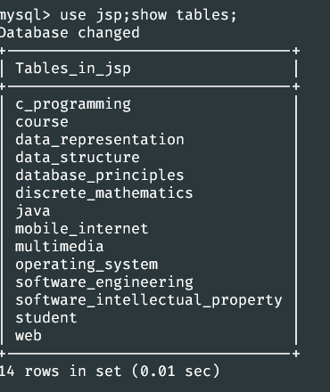

来自之前cnblog的博客
源地址：https://www.cnblogs.com/This-is-Y/p/14257025.html
use information_schema;
show tables;
可以看到很多表
在注入的时候，有用的表是tables，columns
这两个表存了整个mysql数据库中的表的信息，列的信息
看一下两个表中的信息
TABLES:
在注入过程中只需要关注两条，table_name 和table_schema，table_name是所有表的表名，table_schema是数据库的名字，
比如在jsp表下有很多表

查找tables表中，当table_schema=jsp时的table_name，可以看到和use jsp;show tables;指令执行的结果一致
通俗的说法就是 看看jsp数据库下面有哪些数据表
或者反过来查， select table_schema from information_schema.tables where table_name=”c_programming”;
查找当table_name=“c_programming”时，有哪些数据库，通俗点说就是，看看哪些数据库下面有一个叫做“c_programming”的数据表。
COLUMNS:
这个视图下也有table_schema,table_name，还有一个column_name
可以看一下column_name，举个例子，看一下jsp表下的c_programming的信息
列名分别为number，content,a,b…………
执行select column_name from information_schema.columns where table_schema=”jsp” and table_name=”c_programming”;
这个是查看 jsp库下c_programming表的字段信息，
一致
所以可以直接用information_schema.colums表，重点为其中的table_name，column_name，table_schema几个字段，可以很快的得到需要的信息
之后是concat和group_concat
concat可以把字段拼接起来，group_concat可以把每一条数据拼接起来（前提是知道字段名）
首先看一个表：
select concat(username,password) from admin.admin;
或者是加点其他的字符，方便区分 select concat(username,” + “,password) from admin.admin;
select group_concat(username,” + “,password) from admin.admin;
group_concat也可以加点东西区分，默认是一个”,”，在group_concat()里加一个separator参数（不要逗号）
举个栗子：select group_concat(username,” + “,password separator ‘;’) from admin.admin;
然后来尝试用information_schema来获取admin所有的信息，
1、
select database();确认数据库名
select version();确认mysql版本
2、
select distinct table_schema from information_schema.columns;查看所有的库名，实战中估计会要用到group_concat
select group_concat(distinct table_schema) from information_schema.columns;
3、
select group_concat(distinct table_name) from information_schema.columns where table_schema=”admin”; 查看该库下的表
select group_concat(distinct table_name) from information_schema.columns where table_schema=”security”;
4、
select group_concat(column_name) from information_schema.columns where table_schema=”security” and table_name=”users”;查看该表的字段名
select group_concat(column_name) from information_schema.columns where table_schema=”admin” and table_name=”admin”;
5、
select group_concat(id,” = “,username,” = “,password separator “\n”) from security.users;爆数据

select group_concat(username,” = “,password separator “\n”) from admin.admin;
c_programming